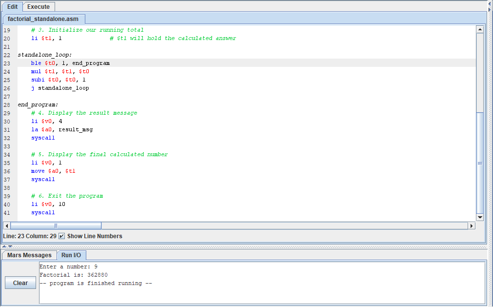
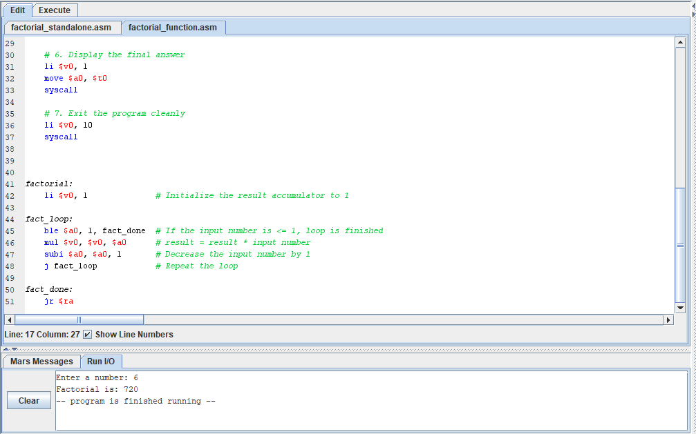

DEPARTMENT OF COMPUTER SCIENCE
Assembly Language Programming — Assignment
Name:
Asagwara Nelson Ekenedilichukwu
Matric No:
SCI/24/25/0328
Course:
IFT212
Department:
Computer Science
1. Develop a standalone factorial program in Assembly language.

2. Convert your solution in (1) above to a function that is called from a main program.
